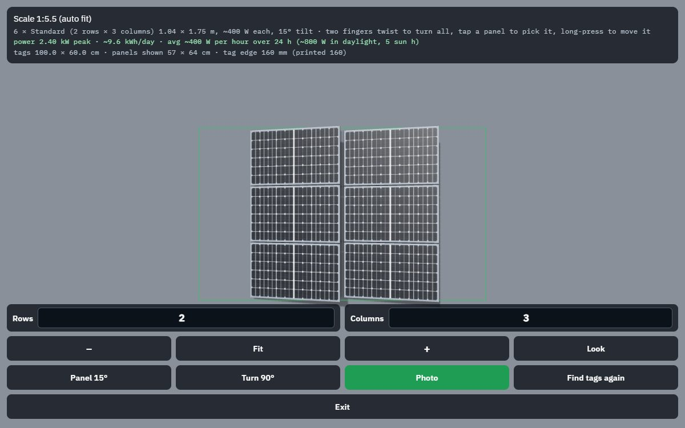

Phase 1
An architect or installer tapes a few printed AprilTags round the site, sketches the design full size in AR (walls, pergolas, planters, panels), and the customer walks round it, flips between options and gets the saved design to look at later.
No site handy? The quick table demo puts a panel array (with its peak kW and kWh/day) or a SketchUp model on 2 to 4 tags on a table.

| Goal | Status | Notes |
|---|---|---|
| Model stays put | partly done | Locks to tags and follows them; the Site Designer re-fixes on every mapped tag and keeps an ARCore anchor between fixes. Emulator: about 3 cm after a full lap; not yet measured on a real site. |
| Roughly the right size | partly done | Scale from the printed tag size. Tape check and scripts/size_check.py report are built; the on-site test plan (docs/size_check.md) has not been run yet. |
| Import designs | partly done | SketchUp .dae and .obj + .mtl + textures, placed by tags or aligned to a site corner; .skp must be exported first. |
| Customer understands it | partly done | Power readout, photo and video, options A/B/C, Before view, size labels, customer viewer; no guided walkthrough yet. |
| Drawing tools | done | Outline slab, wall line with drag-up height, blocks with materials; move, turn, resize, delete, undo. |
| Save and share a design | done | Design JSON (reopens locked to the tags), GLB export, photo and video share. |